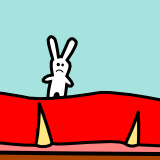
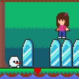
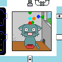
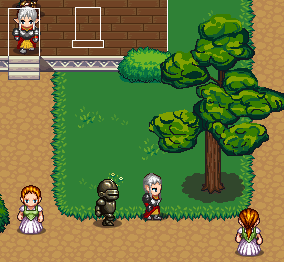
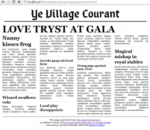

Games
| Title | Screenshot | Description | Requirements | Links |
|---|---|---|---|---|
| Devour |  | This is my entry for the TAGJAM15. The theme was 'WOLF', obviously. Other optional themes were: bridge and sedative. | A screen resolution of 800x600 pixels or more and a browser. | TAGJAM15 website |
| Felicity and the Fifth Element: Love |  | This is my entry for the js13k 2014. Note: This is a fixed version, the original submitted entry had a few issues. | A screen resolution of 1024x768 pixels or more and a browser. | js13kgames.com View my js13k2014 entry on GitHub |
| Build Your Own Blue Ball Machine (BYO BBM) |  | This is my entry for the GitHub Game Off 2013. | A screen resolution of 1024x768 pixels or more and a browser. | GitHub Game Off 2013 |
| Ye Olde Adventure Shoppe (YOAS) |  | I've spent far, far too much of my life in dank, monster-infested dungeons, scavenging for loot, food and weapons. What if you were fed up with adventuring and decided to run the adventurers shop instead?This is my entry for the coding part of the 2012 Liberated Pixel Cup competition. The aim of the competition was to build some open source games that incorporate artwork from the artwork building phase of the project. My goal was to build a game that was NOT an RPG. Note that this project is unfinished, there is currently no actual gameplay. It's just something to look at. Things I would've liked to have implemented: Actual buying and selling of goods. Expanding the shop. Lazy employees. Managing shop inventory and prices. An in-game newspaper that affects product demand. Dealing with thugs that want to extort money from your shop. Etc. All the code and assets are released under the GNU GPL 3.0 license and the CC BY-SA 3.0 License | A screen resolution of 1280x800 pixels or more and a browser. Chrome or Firefox are preferred. Seems to work OK in Internet Explorer 9.0 and Safari, but a little slower and jitterier. | OpenGameArt.org Liberated Pixel Cup View YOAS on GitHub |
| Random fantasy news paper generator |  | A page that generates random silly newspapers with a fantasy theme. This was meant to be a part of the YOAS game. The idea was that at the end of each day you would quickly scan the headlines and look for items that might affect the next days purchases. | Chrome or Safari. This uses a feature of CSS3 that is currently only implemented in Chrome and Safari. Won't display correctly in other browsers. |